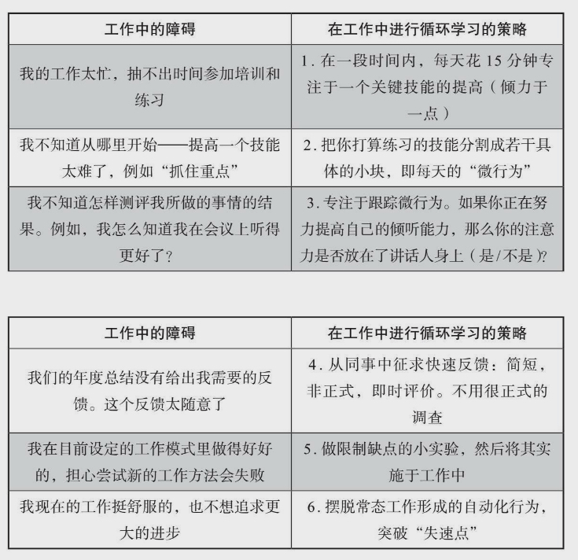

今天看了本好书《卓越工作》，迫不及待地要分享给大家。
作者的第一份工作是在波士顿咨询公司（BCG），加入公司后想着要996大干一番，却发现一女同事早8点晚6点准时下班走，也不加班。关键是工作还做得比自己好。之后的多年时间里，直到他做了哈佛商学院的教授，他都还在思索为什么当年那位女同事能够用更少的时间却能做得更好？
作者发现，没有人愿意愚笨地工作，但大多数人实际上却就在愚笨地工作，因为真的不知道怎么聪明地工作。于是他深度访谈了120位专业人士，调研了5000人后，形成了这本书的内容。
我节选几个观点与大家分享。
少做、入迷
绩效最好的那些人在工作中会表现出少和多两种特质：减少分心的活动，增多专注的努力。
工作表现卓越的人参与的协作项目往往很少。他们小心翼翼地选择将要加入的项目和任务，避开那些想逃掉的工作，然后将自己的努力和资源引导到自己选定并擅长的少量任务上。
对照一下，看看你无法集中注意力是不是因为：
- 较宽的工作活动范围（包括有太多的会议和太多的工作项目）；
- 诱惑（包括来自他人施加的和自己造成的）；
- 让人讨厌的、总让你“多做”的老板（他缺乏方向，设置了太多重点工作）。
如果是的话，记住：尽可能做减法；只做必须的加法。
做有价值的事
别把自己视为一个普通的员工，而要把自己当作一个创新工作者。寻找和治疗痛点，提出“愚蠢”的问题，把注意力聚焦于怎样重新设计和为社会创造极大的价值上。
因为：一个人的工作价值＝为他人产生的价值×质量×效率。
在工作中，所谓的卓越价值，就是创造能极大地有益于他人的产品，这样的产品是高质量和高效率共同生产出来的。
如何学习
你是将一年的经验重复10年，还是每天都追求进步？工作中的什么障碍阻止了你的进步，如何刻意练习（Tasking & 循环学习）？

找到激情与使命感
使命感和激情是不同的。
- 激情是“做你所爱”，”激情问的是：“这个世界能给我带来什么？”
- 而使命感是“贡献你能贡献的”。使命感问的是：“我能为这个世界做点儿什么？
努力找到一个能把自己的价值贡献给公司和社会的任务，然后再把激情投入其使命感中。只有把激情和使命感结合起来，而不是空有激情，才能创造最好的结果。
有三种方法可以增加你的激情和使命感：
- 发现你的新角色。你可以在你目前所待的地方找到正确的匹配点；你不必如猴子掰玉米般跳到另一类激情上去。就在你现在所属的单位找到新角色，让它更好地引导你的激情，增强你的使命感。
- 扩大你的激情圆。对工作充满激情不仅仅是找到工作本身的乐趣。激情也来自成功、创造性、社会互动、学习和能力等各个方面。利用这些维度扩大你的激情圆。
- 攀登使命感金字塔。找到更多能够增加价值的方法